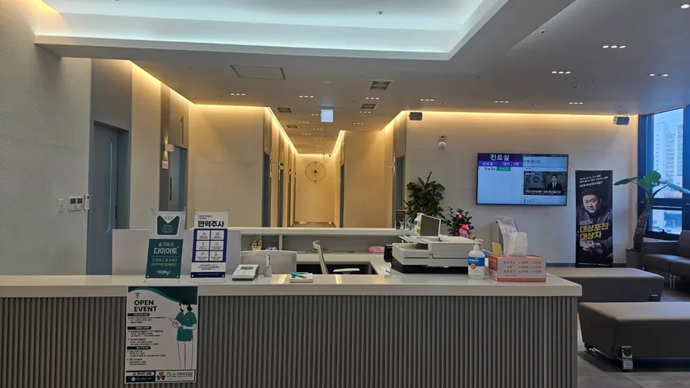
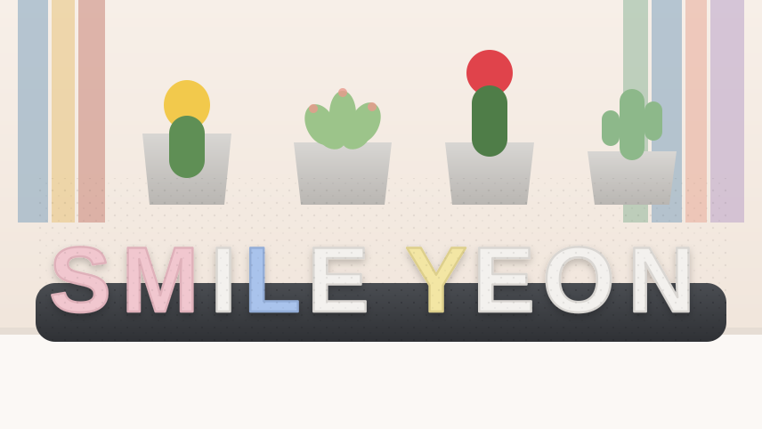
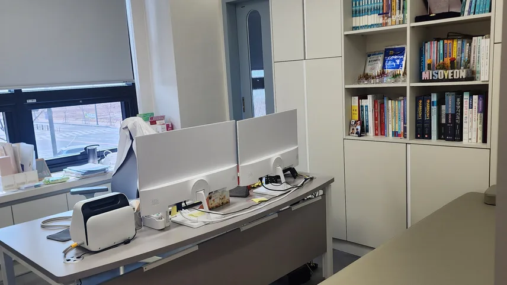
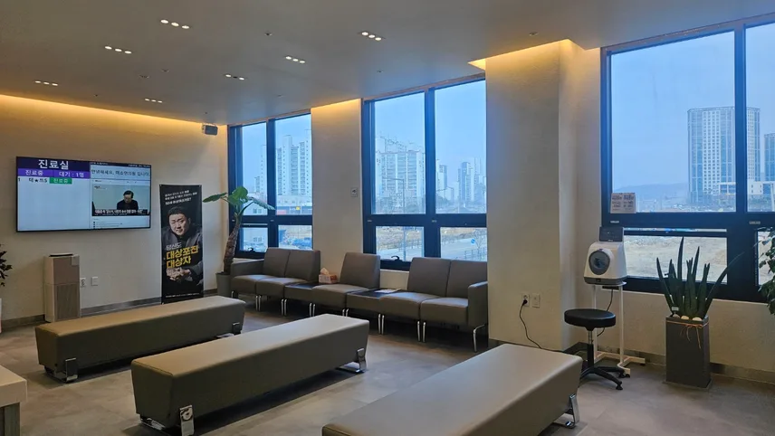
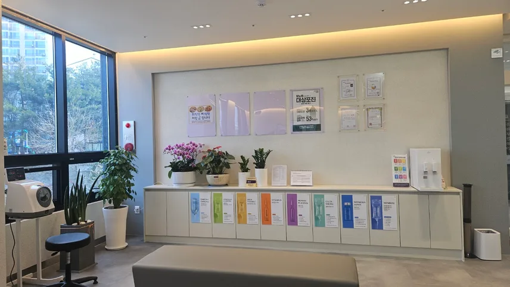
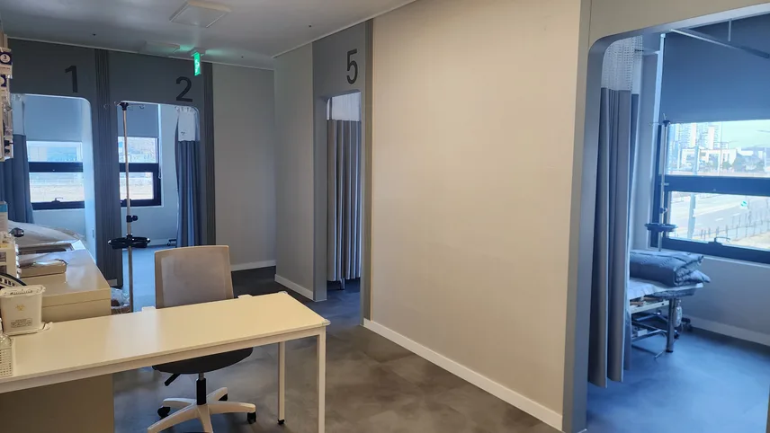
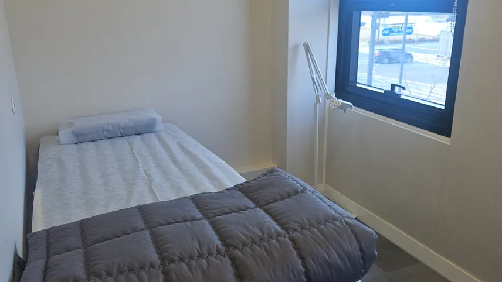

안성 공도읍 · 골프존 건물 2층
가까운 곳에서
가까운 곳에서
편안하게 만나는
우리 동네 의원
미소연의원은 공도 지역 주민과 직장인의 일상 건강을 함께 살피는 의원입니다. 증상을 충분히 듣고, 필요한 진료를 차분히 설명해 드리겠습니다.


진료시간
- 월 · 화 · 목 · 금
- 09:00 – 18:00
- 토요일
- 09:00 – 13:00
- 점심시간
- 13:00 – 14:00
- 수 · 일 · 공휴일
- 휴진
위치
서동대로 4061, 2층
안성IC에서 차로 약 5분
주은풍림 · 태산아파트 사이 골프존 건물
Clinic
진료 안내
초등학생 이상 환자분을 대상으로 내과 진료와 함께 수액치료, 성인 예방접종을 하고 있습니다.

Doctor
충분히 듣고,
충분히 듣고,
쉽게 설명하는 진료
몸이 불편해 병원을 찾을 때 가장 필요한 것은 내 이야기를 끝까지 들어주는 의사라고 생각합니다. 미소연의원은 증상과 생활습관을 꼼꼼히 여쭙고, 검사와 치료가 왜 필요한지 이해하기 쉽게 설명드리겠습니다.
황연희 대표원장
- 경희대학교 의과대학 의학과 졸업
- 경희대학교 의과대학병원 내과 전공의 수료
- 대한내과학회 평생회원
Tour
전체 사진 보기
병원 둘러보기
밝고 넓은 창이 있는 대기실과 독립된 수액실을 갖추고 있습니다.




진료 문의는 전화로 편하게 하세요
월·화·목·금 09:00–18:00 · 토 09:00–13:00 (수·일·공휴일 휴진)